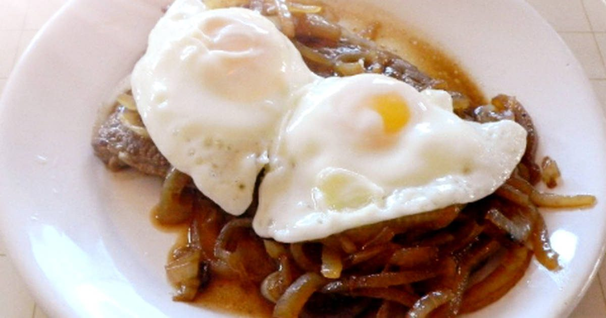
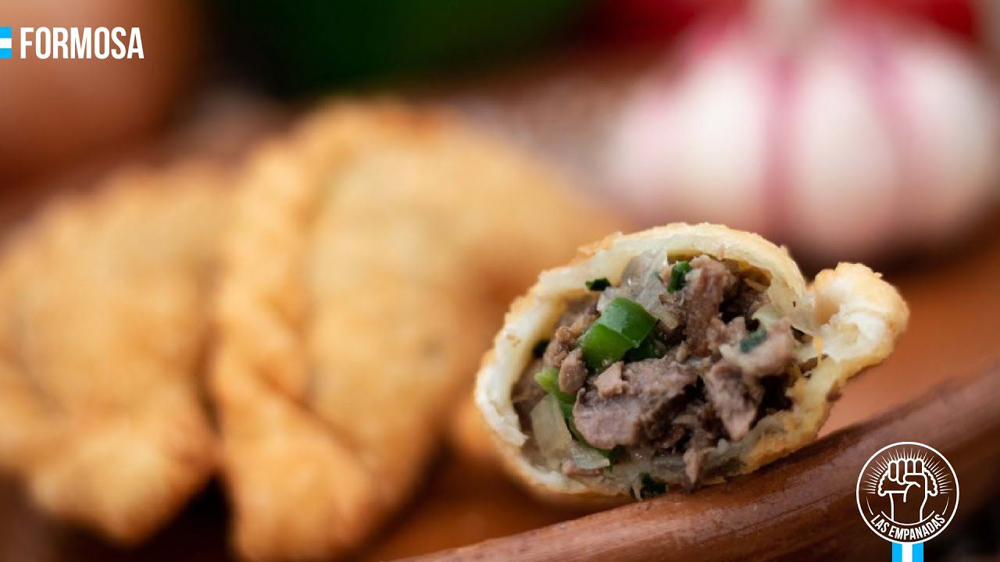

La sopa paraguaya está hecha a base harina de maíz de color amarillo (no es polenta), huevos, quesos y
leche. Y vale aclarar, la sopa paraguaya no es precisamente una sopa, sino que se trata de un bizcocho
salado y esponjoso, rico en calorías y proteínas.
Chupín de pescado
Se trata de un plato destacado de la gastronomía de Formosa.
Este guiso es preparado con vegetales, tomates frescos y pescado (siempre) de río. Un dato, la palabra
chupín viene del quechua “chupi”, que significa “sopa”.

Bife Koygua o Bife criollo
En el norte argentino le dicen bife criollo. En el NEA y en Paraguay, bife Koygua. Es un plato que
también forma parte del recetario de Chaco y Corrientes.

Empanadas de Charque
El charque es básicamente la carne vacuna, que ha pasado por un proceso de deshidratación expuesta al sol
por varios días cubierta de sal. Las empanadas formoseñas están rellenas de esta variedad de carne y son
deliciosas.